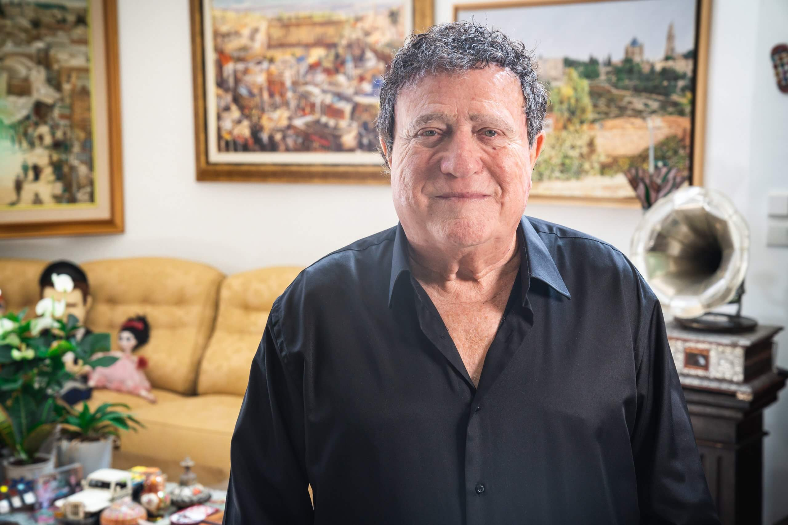
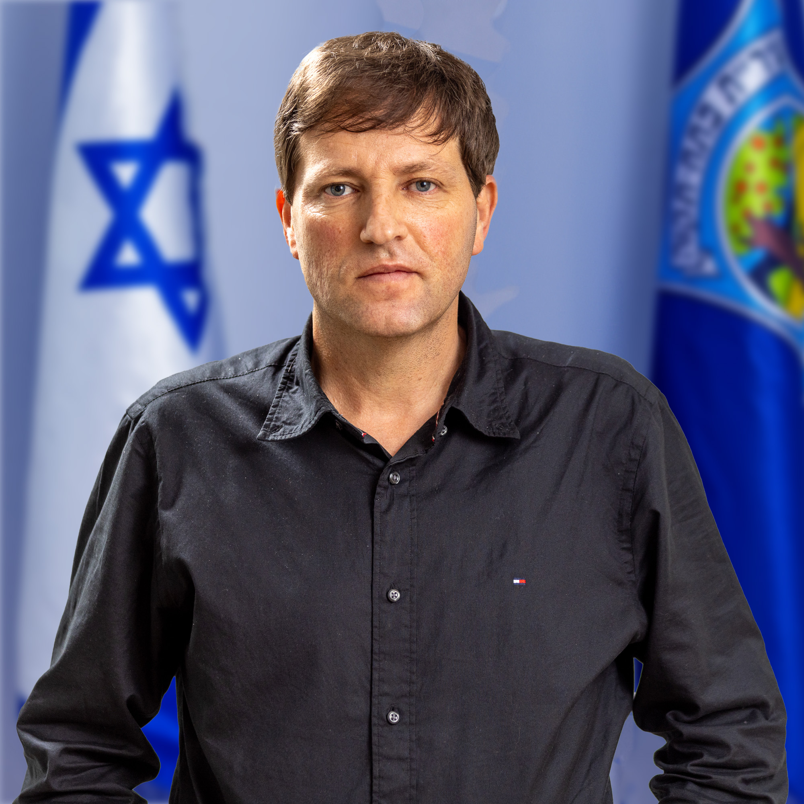
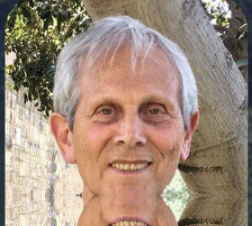
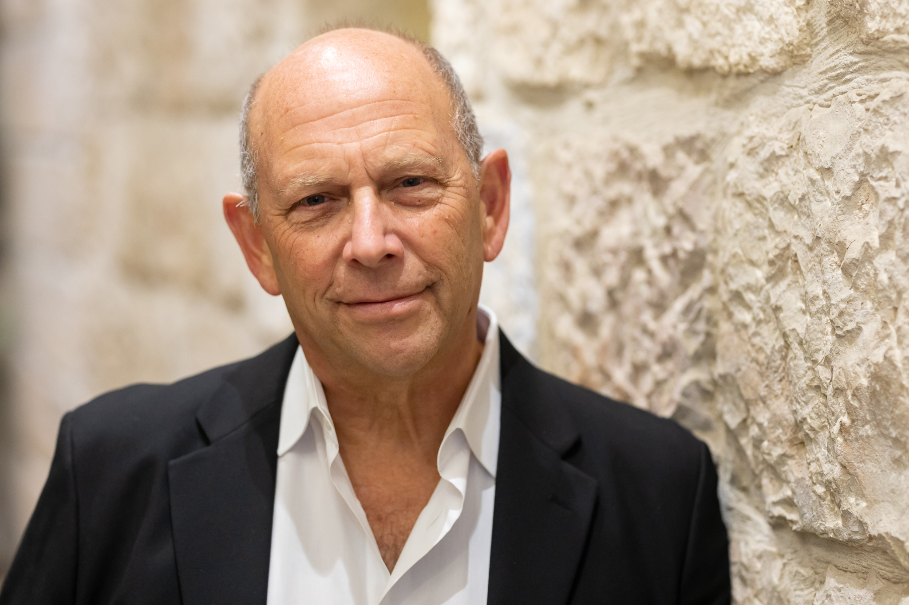

הכרה ציבורית ויוקרתית ליוצרים ומבצעים אשר תרומתם משמעותית למוזיקה העולמית Prestigious public recognition for creators and performers whose contribution to world music is significant
המוזיקה היהודית היא הגשר המחבר בין עבר, הווה ועתיד: שפה ללא גבולות שנדדה עם העם היהודי בכל תפוצותיו. שלושת אלפים שנות יצירה, מהמזמורים הקדומים ועד הפסקול של ישראל המודרנית. Jewish music is the bridge connecting past, present and future — a language without borders that travelled with the Jewish people through every diaspora. Three thousand years of creation, from ancient psalms to the soundtrack of modern Israel.
על כן, הוחלט לקיים את טקס פרס התהילה ולהעניק הכרה והוקרה ליוצרים ומבצעים היהודים שתרומתם למוזיקה העולמית ראויה לציון. It was therefore decided to hold the Fame Award ceremony and grant recognition to the Jewish creators and performers whose contribution to world music deserves to be acknowledged.
"הלילה שבו תרומתם של היהודים למוזיקה העולמית תיקח את מקומה בהיסטוריה" "The night the Jewish contribution to world music takes its place in history"הכותרת הצפונה לטקס 2027 The guiding spirit of the 2027 Ceremony
טקס הפרסים הוא שלב ראשון בחזון רחב יותר: הקמת היכל התהילה של המוזיקה היהודית, מוסד לאומי ועולמי שייבנה בפתח תקווה ויהפוך לבית הקבע של המורשת המוזיקלית היהודית. The Awards Ceremony is the first phase of a broader vision: building the Jewish Music Hall of Fame — a national and global institution to be built in Petah Tikva, becoming the permanent home of Jewish musical heritage.
כל זוכה בפרס יוכנס לאחר מכן אל תוך היכל התהילה הפיזי, תצוגת כבוד קבועה במוסד החדש שייפתח בעתיד. Every prize winner will subsequently be inducted into the physical Hall of Fame — a permanent honorific display in the new institution opening in the future.
פתח תקווה, ישראל · שייפתח בעתיד · עיצוב: Braslavi Architects Petah Tikva, Israel · Opening in the future · Design: Braslavi Architects

אמן ושגריר בינלאומי של המוזיקה היהודית והישראלית, יושב ראש עמותת מיתר — היכל התהילה של המוזיקה היהודית. Artist and worldwide ambassador for Jewish and Israeli music, Chairman of the Meitar — Hall of Fame Society.

ראש עיר פתח תקווה — השותפה המרכזית לאירוח הטקס הראשון של פרס התהילה. Mayor of Petah Tikva — the city hosting the inaugural Fame Award ceremony.

יוזם ומייסד היכל התהילה של המוזיקה היהודית וטקס פרס התהילה. Founder of the Jewish Music Hall of Fame and the Fame Award ceremony.
מנהלת עמותת מיתר — הגוף המוביל את הקמת היכל התהילה של המוזיקה היהודית בפתח תקווה. Director of the Meitar Society, leading the establishment of the Jewish Music Hall of Fame in Petah Tikva.

השמות יפורסמו בהמשךTo be announced
השמות יפורסמו בהמשךTo be announced
היכל התהילה של המוזיקה היהודית — סרטון היכרות Jewish Music Hall of Fame — Introduction
היכל התרבות, פתח תקווה. בנוכחות ראשי המדינה. שידור בטלוויזיה לישראל ולעולם. Petah Tikva Cultural Center. In the presence of Israeli leaders. Televised broadcast worldwide.